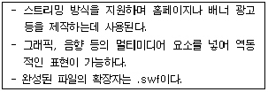
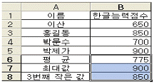
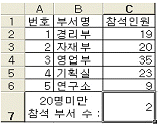
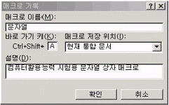
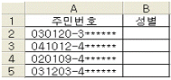
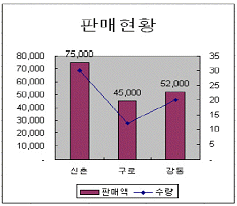
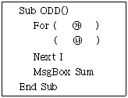
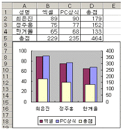

컴퓨터활용능력-2급 (2008-05-18 기출문제)
1과목: 컴퓨터 일반
1. 다음 중 웹 애니메이션 제작 프로그램에 대한 설명으로 가장 적합한 것은?

- Auto CAD
- Flash
- CSS
- Front page
(정답률: 70%)

2. 다음 중 프린터 설치를 위한 [프린터 추가 마법사]에 관한 설명으로 가장 옳지 않은 것은?
- 로컬프린터 또는 네트워크프린터를 선택하여 설치 할 수 있다.
- 프린터에서 사용할 포트는 LPT1로 고정되어 있다.
- 설치할 프린터의 종류를 선택하고 기본적인 프린터 모델은 프린터 목록에서 모델을 선택할 수 있다.
- 프린터 이름을 변경하여 입력할 수 있다.
(정답률: 65%)
3. 정보화 시대, 인터넷 시대에 중요한 요소로 자리하고 있는 멀티미디어의 특징과 그에 대한 설명으로 옳지 않은 것은?
- 디지털화 : 다양한 아날로그 데이터를 디지털 데이터로 변환하여 통합 처리한다.
- 쌍방향성 : 정보 제공자와 사용자 간의 의견을 통한 상호 작용에 의해 데이터가 전달된다.
- 정보의 통합성 : 텍스트, 그래픽 사운드, 동영상, 애니메이션등의 여러 미디어를 통합하여 처리한다.
- 선형성 : 데이터가 일정한 방향으로 처리되고 순서에 관계없이 원하는 선택적으로 처리한다.
(정답률: 75%)
4. 다음 중 디스크 캐시(Disk Cache)에 대한 설명으로 적절치 않은 것은?
- 속도 증가를 위해 디스크 캐시에 파일을 미리 읽어 들여 작업시간을 단축한다.
- 프로세스의 지역성을 이용한 기법이다.
- 주 저장장치 용량보다 더 큰 저장용량을 주소 지정할 수 있도록 한다.
- 디스크의 접근속도를 더 높이기 위해 준비된 주기억장치내의 특별한 영역이다.
(정답률: 53%)
5. 다음 중 인터넷 서비스에 대한 설명으로 옳지 않은 것은?
- 전자우편 : E-mail이라고 하며 다른 인터넷 사용자들과 편지를 주고받을 수 있는 서비스
- IRC : 게시판과 같은 역할을 하며 공통된 주제에 대하여 정보나 의견을 나눌 수 있는 서비스
- Telnet : 멀리 떨어진 곳에 위치한 호스트 컴퓨터에 접속할 때 사용하는 서비스
- FTP : 파일전송 프로토콜(File Transfer Protocol)의 약자로 인터넷에서 파일을 송수신할 때 사용되는 서비스
(정답률: 60%)
6. 다음 중 사용자가 편리하게 컴퓨터를 사용할 수 있도록 [내게 필요한 옵션] 설정에 대한 설명으로 옳지 않은 것은?
- 소리 : 소리 탐지 사용 기능은 프로그램에서 화면에 자막으로 표시된 것을 음성 또는 소리로 나타낸다.
- 키보드 : 토글키 사용 기능은 [Caps Lock], [Num Lock], [Scroll Lock] 키를 누를 때 신호음을 들을 수 있다.
- 디스플레이 : 고대비 사용 기능은 읽기 쉽도록 구성된 색상 및 글꼴을 사용한다.
- 마우스 : 마우스 키 사용 기능은 키보드의 숫자 키패드로 마우스 포인터를 움직이도록 한다.
(정답률: 29%)
7. 다음 중 자료의 단위가 작은 것부터 큰 순으로 바르게 나열된 것은?(문제오류로 실제 시험 문제에서 2번 보기와 4번 보기가 똑같이 출제 되어서 2, 4번 모두 정답 처리한 문제 입니다. 여기서는 2번을 정답 처리 합니다.)
- Bit - Byte - Item - Record - Word
- Bit - Byte - Word - Item - Record
- Bit - Byte - Item - Word - Record
- Bit - Byte - Word - Item - Record
(정답률: 75%)
8. 다음 중 한글 Windows XP의 특징으로 옳지 않은 것은?
- 32Bit 데이터 처리 지원
- 비선점형 멀티태스킹의 지원
- 플러그 앤 플레이 기능의 지원
- 네트워크 설치 마법사를 제공
(정답률: 49%)
9. 다음 중 객체 지향 언어들이 제공하는 공통적인 특징으로 옳지 않은 것은?
- 독립성(Independence)
- 다형성(Polymorphism)
- 상속성(Inheritance)
- 캡슐화(Encapsulation)
(정답률: 44%)
10. 다음 중 한글 Windows XP의 프린터 스풀(Spool) 기능에 대한 설명으로 옳지 않은 것은?
- Simultaneous Peripheral Operation On Line의 약자
- 설정한 프린터 아이콘에서 등록정보를 선택하여 세부사항 지정 가능
- 저속의 입출력장치를 중앙처리장치와 병행하여 작동시켜 효율성 증가
- 출력이 끝날 때까지 컴퓨터를 동시 사용하지 않도록 독립성을 유지하여 자료의 정상 출력유도
(정답률: 55%)
11. 다음 중 Domain Name에 대한 설명으로 옳지 않은 것은?
- 숫자로 구성된 IP주소를 사람들이 기억하고 이해하기 쉽도록 문자열로 만든 주소이다.
- 전 세계의 Domain Name의 총괄은 KRNIC에서 한다.
- 인터넷의 모든 Domain은 전 세계적으로 고유하게 존재해야 한다.
- 도메인 네임은 한글과 숫자를 섞어서 만들 수 있다.
(정답률: 51%)
12. 한글 Windows XP에서 시스템 장치나 응용 소프트웨어 대한 정보를 확인하고 충돌 발생 여부를 알기 위한 방법으로 옳은 것은?
- [보조 프로그램]-[시스템 도구]-[시스템 정보]
- [보조프로그램]-[내게 필요한 옵션]-[유틸리티 관리자]
- [보조프로그램]-[엔터테인먼트]
- [보조프로그램]-[동기화]
(정답률: 64%)
13. 다음 중 데이터 종류에 따른 컴퓨터의 분류로 옳지 않은 것은?
- 하이브리드 컴퓨터
- 디지털 컴퓨터
- 슈퍼컴퓨터
- 아날로그 컴퓨터
(정답률: 63%)
14. 다음 중 정보통신 관련 용어의 설명으로 옳지 않은 것은?
- 네티켓은 인터넷에 연결된 컴퓨터들 간에 데이터를 주고받을 수 있도록 하는 표준 프로토콜이다.
- 웹서버는 정보 공유를 위해 웹 사이트를 쉽게 호스팅하고 관리하며, 웹 기반의 업무 어플리케이션을 만들고, 파일, 인쇄, 미디어, 통신 서비스를 웹으로 확장할 수 있는 컴퓨터를 말한다.
- PCS는 개인 휴대통신(Personal Communication Services)을 줄인 말이다.
- 유비쿼터스란 사용자가 네트워크나 컴퓨터를 의식하지 않고 장소에 상관없이 자유롭게 네트워크에 접속할 수 있는 환경을 말한다.
(정답률: 63%)
15. 다음 중 한글 Windows XP의 클립보드에 대한 설명으로 옳지 않은 것은?
- 클립보드는 Windows XP뿐만 아니라 설치된 모든 응용프로그램에서 공동으로 이용한다.
- 화면 전체 내용을 그대로 클립보드에 복사하는 키는 [Prt Scr/SysRq]이다.
- 현재 사용 중인 활성 창을 클립보드에 복사하는 키는 [Ctrl]+[Prt Scr/SysRq]이다.
- 클립보드의 내용을 파일로 저장할 수 있으며, 파일의 확장자는 CLP가 된다.
(정답률: 39%)
16. 다음 중 Internet Explorer의 [도구]-[인터넷 옵션]의 탭에서 설정하는 기능에 대한 설명으로 옳지 않은 것은?
- 일반 : 홈페이지로 사용할 페이지를 변경할 수 있다.
- 보안 : 웹 컨텐트 영역별로 적용할 보안 수준을 설정할 수 있다.
- 개인 정보 : 팝업을 허용할 웹 사이트를 추가할 수 있다.
- 공유 : 공유할 폴더를 지정할 수 있다.
(정답률: 38%)
17. 다음 중 한글 Windows XP에서 기본 프린터에 대한 설명으로 옳지 않은 것은?
- 기본프린터는 해당 프린터 아이콘에 체크 표시가 되어 있다.
- 기본 프린터는 한 대만 지정할 수 있다.
- 인쇄시 특정 프린터를 지정하지 않으면 기본 프린터에 인쇄된다.
- 네트워크상에 연결된 프린터는 기본프린터로 지정되지 않는다.
(정답률: 72%)
18. 다음 중 제어장치(Control Unit)의 구성 요소로 옳지 않은 것은?
- 연산장치(ALU)
- 프로그램카운터(Program Counter)
- 부호기(Encoder)
- 명령해독기(Instruction Deconder)
(정답률: 46%)
19. 다음 중 폴더 옵션에 대한 설명으로 옳지 않은 것은?
- 등록된 파일 형식을 볼 수 있으며, 새로운 파일 형식을 등록할 수 있다.
- 숨김 파일 및 폴더를 표시하려면 [폴더옵션]의 ‘보기’ 탭에서 설정할 수 있다.
- 보호된 운영체제 파일을 볼 수 있도록 수정이 가능하다.
- 네트워크 드라이브 연결을 설정할 수 있다.
(정답률: 49%)
20. 다음 중 컴퓨터 시스템 보안 예방책을 침입하여 시스템에 무단으로 접근 경로를 만드는 컴퓨터 범죄는?
- 스니핑(Sniffing)
- Dos(Denial of Service)
- 트랩도어(Trap Door)
- 스푸핑(Spoofing)
(정답률: 46%)
2과목: 스프레드시트 일반
21. 다음 시트에서 [B6:B8] 셀 영역의 수식으로 옳은 것은?

- =AVG(B2:B5), =MAX(B2:B5), =LARGE(B2:B5,-3)
- =AVG(B2:B5), =LARGE(B2:B5,1), =LARGE(B2:B5, -3)
- =MEDIAN(B2:B5), =LARGE(B2:B5,3), =SMALL(B2:B5,3)
- =AVERAGE(B2:B5), =MAX(B2:B5), =SMALL(B2:B5,3)
(정답률: 63%)
22. 다음 중 [데이터]-[레코드 관리]에 대한 설명으로 옳지 않은 것은?
- 레코드 검색 시 여러 열에 조건을 입력할 수 있는데 입력된 조건은 또는(OR)으로 결합되므로 한 조건이라도 만족하는 데이터는 모두 표시된다.
- 워크시트에 입력된 표 모양의 데이터베이스 자료를 한 행씩 보면서 데이터를 수정하거나 새로운 데이터를 추가 또는 삭제 할 수 있다.
- 수식으로 입력된 데이터에 대해서는 수정할 수 없다.
- 데이터를 검색할 때 와일드카드 문자(*,?)를 사용하여 특정한 문자열 데이터를 검색할 수 있다.
(정답률: 25%)
23. “TestData.xls" 파일의 ”상품 재고“ 시트 [B2] 셀과 [B3] 셀을 참조하려고 한다. 다음 중 옳은 것은?
- =“TestData.xls"상품 재고!B2:B3
- ='[TestData.xls]상품 재고'!B2:B3
- =[TestData.xls]상품 재고/B2:B3
- ="TestData.xls!상품 재고"B2:B3
(정답률: 40%)
24. 셀의 서식은 기본설정인 ‘G/표준’으로 설정되어 있다. 셀에 입력된 값이 10000을 초과하면 파랑색으로 표시하고, 음수이면 빨강색과 부호는 생략하고 괄호 안에 수치를 표시하고자 한다. 다음 중 사용자 정의 서식으로 옳은 것은?
- [파랑][>=10000]G/표준;[빨강][<0](G/표준);
- [빨강]G/표준;[파랑][>10000]G/표준
- [파랑][>10000]G/표준;[빨강][<0](G/표준)
- [파랑][>10000]G/표준;[빨강](G/표준)
(정답률: 61%)
25. 다음 중 데이터의 그룹 및 윤곽 설정 기능에 대한 설명으로 옳지 않은 것은?
- [데이터]-[그룹 및 윤곽 설정]-[그룹]에서 열이나 행을 선택하면 그룹화 된다.
- 모든 정보를 숨기려면 를 클릭한다.
(정답률: 61%)
 윤곽 기호에서 가장 낮은
윤곽 기호에서 가장 낮은  수준을 클릭한다."는 모든 정보를 숨기려면 가장 낮은 수준의 윤곽 기호를 클릭하여 숨길 수 있다는 것을 의미한다. 윤곽 기호는 데이터의 그룹화 및 계층 구조를 나타내는데, 가장 낮은 수준의 윤곽 기호를 클릭하면 해당 그룹의 모든 정보를 숨길 수 있다.
수준을 클릭한다."는 모든 정보를 숨기려면 가장 낮은 수준의 윤곽 기호를 클릭하여 숨길 수 있다는 것을 의미한다. 윤곽 기호는 데이터의 그룹화 및 계층 구조를 나타내는데, 가장 낮은 수준의 윤곽 기호를 클릭하면 해당 그룹의 모든 정보를 숨길 수 있다.26. 아래 시트에서 참석인원이 20명 미만인 부서의 수를 구하는 수식을 [C7] 셀에 입력하려고 한다. 다음 중 옳은 것은?

- =COUNTIF(C2:C6, "<20")
- =COUNTIF("<20",C2:C6)
- =COUNT(C2:C6,"<20")
- =COUNT("<20",C2:C6)
(정답률: 53%)
27. 페이지 번호를 삽입하여 인쇄하려고 한다. 다음 중 입력 내용으로 옳은 것은?
- ![페이지 번호]
- &[PAGE]
- &[페이지 번호]
- ![PAGE]
(정답률: 49%)
28. 다음 그림과 같이 매크로 기록했을 때, 매크로를 실행할 수 있는 방법으로 옳지 않은 것은?

- [Ctrl]+[F8] 키를 눌러 ‘문자열’ 매크로를 선택한 후, [실행] 버튼을 클릭한다.
- [Ctrl]+[Shfit]+[A] 키를 누른다.
- [도구] 메뉴의 [매크로]-[매크로]에서 ‘문자열’ 매크로 이름을 선택한 후, [실행] 버튼을 클릭한다.
- [Visual Basic] 도구 모음의 [매크로 실행] 버튼을 클릭하여 ‘문자열’ 매크로 이름을 선택한 후, [실행] 버튼을 클릭한다.
(정답률: 43%)
29. 아래의 시트에서 주민번호의 8번째 숫자가 1또는 3이면 ‘남’, 아니면 ‘여’를 표시하려고 한다. 다음 중 옳지 않은 것은?

- =CHOOSE(MID(A2,8,1),"남“,”여“,”남“,”여“)
- =IF(OR(MID(A2,8,1)="1",MID(A2,8,1)="3"),"남“,”여“)
- =IF(MID(A2,8,1)="1","남“,IF(MID(A2,8,1)="2","여”,IF(MID(A2,8,1) ="3", "남“,”여“)))
- =IF(OR(MID(A2,8,1)=1, MID(A2,8,1)=3)=1,"남“,”여“)
(정답률: 30%)
30. 다음 중 윗주에 관련된 설명으로 옳지 않은 것은?
- 윗주를 삽입한 후 윗주가 보이지 않으면 [서식]-[윗주달기]-[표시 또는 숨기기]를 실행하면 윗주가 표시된다.
- 윗주는 숫자가 입력된 셀에 삽입해야 표시된다.
- 윗주의 글꼴을 변경하려면 [서식]-[윗주 달기]-[설정]을 실행하여 선택한다.
- [서식]-[윗주 달기]-[편집]을 실행해서 표시된 윗주를 수정할 수 있다.
(정답률: 55%)
31. 아래 그림과 같이 차트의 막대그래프 위에 데이터의 값을 표시하려고 한다. 이를 실행하기 위한 방법으로 옳은 것은?

- 데이터 요소 서식
- 데이터 계열 서식
- 차트 영역 서식
- 데이터 레이블 추가
(정답률: 59%)
32. 다음 은 1부터 100까지 홀수의 합을 구하기 위한 프로그램이다. (㉮)와 (㉯)에 들어갈 내용으로 옳은 것은?

- ㉮ I=1 To 100 By 2 ㉯ Sum =Sum+2
- ㉮ I=0 To 100 Step 2 ㉯ Sum =i+Sum
- ㉮ I=1 To 100 Step 2 ㉯ Sum =Sum+i
- ㉮ I=1 To 100 By 2 ㉯ Sum =Sum+i
(정답률: 42%)
33. 다음은 차트 옵션 변경에 대한 설명이다. 해당되지 않는 것은 어느 것인가?
- 차트 옵션에서 차트의 원본 데이터 테이블을 변경할 수 있다.
- 차트 옵션에서 데이터 레이블의 표시 여부를 변경할 수 있다.
- 차트 옵션에서 차트의 제목을 변경할 수 있다.
- 차트 옵션에서 범례 표시 위치를 변경할 수 있다.
(정답률: 54%)
34. 다음 중 [창]-[틀 고정]에 대한 설명으로 옳지 않은 것은?
- 셀 포인터의 이동에 상관없이 항상 제목 행이나 제목 열을 표시하고자 할 때 설정한다.
- 제목 행으로 설정된 행은 셀 포인터를 화면의 아래쪽으로 이동시켜도 항상 화면에 표시된다.
- 제목 열로 설정된 열은 셀 포인터를 화면의 오른쪽으로 이동시켜도 항상 화면에 표시된다.
- 틀 고정을 취소할 때는 셀 포인터를 틀 고정된 우측 하단에 반드시 위치시키고 [창]-[틀 고정 취소]를 클릭해야 한다.
(정답률: 52%)
35. 다음 중 수식 입력줄의 기능에 대한 설명으로 옳지 않은 것은?
- 현재 셀에 입력된 문자 데이터를 그대로 표시한다.
- 수식 입력줄을 이용하여 입력된 데이터를 수정할 수 있다.
- 수식 입력줄을 이용하여 셀의 특정 범위에 이름을 정의할 수 있다.
- 셀의 내용을 입력 시 수식 입력줄에 직접 입력이 가능하다.
(정답률: 45%)
36. 다음 그림과 같은 이중 축 차트에 관한 설명으로 옳지 않은 것은?

- 계열 위치는 행 기준으로 선택되었다.
- 이중 축 차트는 특정 계열의 값이 다른 계열과 크게 차이나는 경우에 주로 사용한다.
- 총점 계열이 이중 차트로 표시된 상태이다.
- 보조 값 축 서식을 선택하여 최소값을 0, 최대값을 400으로 설정한 상태이다.
(정답률: 43%)
37. 상품 가격이 2500원짜리 물건에 대하여 총 판매액이 1,500,000원이 되게 하기 위해서는 판매수량이 얼마나 되어야 하는지 알아보기 위해 사용되는 유용한 기능은?
- 피벗 테이블
- 고급 필터
- 목표값 찾기
- 레코드 관리
(정답률: 75%)
38. 다음 중 피벗 테이블에 대한 설명으로 옳은 것은?
- 피벗 테이블을 만들지 않고 피벗 차트를 만들 수 있다.
- 피벗 테이블을 작성 후 데이터 필드에 위치하고 있는 필드에 계산 함수를 변경할 수 없다.
- 날짜가 입력된 필드는 그룹으로 묶을 수 있으나 시간이 입력된 필드는 그룹으로 묶을 수 없다.
- 원본 데이터가 변경된 후 피벗 테이블의 도구 모음을 이용하여 피벗 테이블 데이터를 변경할 수 있다.
(정답률: 48%)
39. [A1] 셀에 ‘###.##’와 같은 사용자 서식 코드를 지정한 뒤 12345.678이라고 입력했을 때 셀에 표시되는 값은?
- 123.46
- 12345.678
- 12345.68
- 123.45
(정답률: 51%)
40. 다음 중 특정 날짜를 입력하면 그에 해당되는 영문 요일 (Sunday~Saturday)이 결과로 표시되도록 하려고 한다. 다음 중 설정 방법으로 옳은 것은?
- [셀 서식]-[날짜]-[형식]에서 'dddd'를 설정한다.
- [셀 서식]-[사용자 정의]-[형식]에서 ‘dddd’를 설정한다.
- [셀 서식]-[시간]-[형식]에서 ‘aaaa'를 설정한다.
- [셀 서식]-[기타]-[형식]에서 ‘aaaa'를 설정한다.
(정답률: 38%)